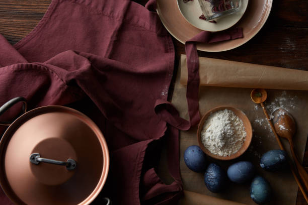

Benvenuto nel mio ricettario!
Qui troverai il modo di cucinare i tuoi piatti preferiti tipici della cultura italiana.
Immergiti con me nel mondo del salato e del dolce!

Le nostre ricette
| Regione | Ricetta Salata | Ricetta Dolce |
|---|---|---|
| Valle d'Aosta | Fonduta | Tegole |
| Piemonte | Vitello tonnato | Bonet |
| Liguria | Focaccia | Pandolce |
| Lombardia | Risotto alla milanese | Panettone |
| Trentino Alto-Adige | Canederli | Strudel di mele |
| Veneto | Baccalà | Tiramisù |
| Friuli Venezia Giulia | Frico | Gubana |
| Emilia-Romagna | Tortellini | Zuppa inglese |
| Toscana | Bistecca alla fiorentina | Cantucci |
| Marche | Olive all'ascolana | Cicerchiata |
| Umbria | Torta al testo | Rocciata |
| Lazio | Carbonara | Maritozzo |
| Abruzzo | Arrosticini | Parrozzo |
| Molise | Pampanella | Colac |
| Campania | Pizza | Sfogliatella frolla |
| Puglia | Orecchiette con cime di rapa | Pasticciotto |
| Basilicata | Lagane e ceci | Strazzate |
| Calabria | Fileja alla 'Nduja | Tartufo di pizzo |
| Sicilia | Arancini | Cannoli |
| Sardegna | Malloreddus alla campidanese | Seadas |
Ecco un video che mostra alcuni dei piatti tradizionali italiani: